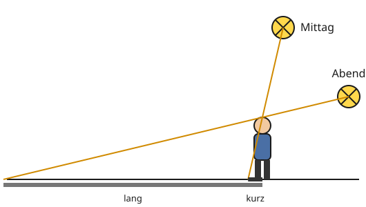

Wie groß wird der Schatten?
Mit einem KI-Tutor lernen
Ein KI-Tutor erklärt dir diese Seite und hilft dir bei den Übungen. Wähl deinen Assistenten:
Mit Claude öffnen Mit ChatGPT öffnen Mit Mistral Vibe öffnen
Du nutzt dein eigenes Konto beim Anbieter. Der Assistent ist kein Angebot von lernapps.net: lernapps liefert nur Inhalte und Übungen. Die Wahl gilt für alle Seiten, nur auf diesem Gerät.
Warum wächst der Schatten?
Wenn du abends an einer Straßenlaterne vorbeigehst, wird dein Schatten auf dem Gehweg immer länger, je weiter du weggehst. Und dein Schatten am Mittag ist viel kürzer als am Abend.
Nach dieser Seite kannst du vorhersagen, ob ein Schattenbild größer oder kleiner wird, wenn man Lampe, Gegenstand oder Schirm verschiebt. Du brauchst dafür die Randstrahlen von der Seite davor.
Die Randstrahlen entscheiden
Die zwei Randstrahlen laufen von der Lampe aus auseinander. Wie groß das Schattenbild wird, hängt davon ab, wie weit sie bis zum Schirm auseinanderlaufen können und wie steil sie es tun.
| Du verschiebst … | … so | Schattenbild |
|---|---|---|
| den Schirm | weiter weg vom Gegenstand | wird größer |
| den Schirm | näher an den Gegenstand | wird kleiner |
| den Gegenstand | näher an die Lampe | wird größer |
| die Lampe | weiter weg vom Gegenstand | wird kleiner |
Schatten auf dem Boden funktionieren genauso. Der Boden ist der Schirm. Der Randstrahl über deinen Kopf entscheidet, wo dein Schatten endet.

Vergleiche, wie steil die zwei Strahlen über den Kopf auf den Boden treffen.
Quelle: eigene Zeichnung. Lizenz: CC-BY-4.0.So liest du die Zeichnung: Jede Sonne schickt einen Randstrahl genau über den Kopf. Wo er den Boden trifft, endet der Schatten. Steht die Sonne hoch (mittags), ist der Strahl steil und der Schatten kurz. Steht sie tief (abends), ist der Strahl flach und der Schatten lang.
Merke
Wenn du Lampe, Gegenstand oder Schirm verschiebst, ändern sich die Winkel der Randstrahlen und damit die Größe des Schattenbilds. Gegenstand nah an der Lampe oder Schirm weit weg: großes Schattenbild. Sonne tief oder weit weg von der Laterne: langer Schatten.
Ausprobieren
Prüfe die Tabelle im Schattenlabor. Schiebe zuerst nur den Gegenstand näher an die Lampe und lies ab, wie hoch das Schattenbild wird. Setze zurück und schiebe dann nur den Schirm weiter weg. Die Zahlen über den Reglern zeigen die Abstände in Kästchen.
Das Schattenbild ist 4 Kästchen hoch. Der Gegenstand ist 2 Kästchen hoch.
Eine Lampe beleuchtet einen 2 Kästchen hohen Gegenstand. Steht er 4 Kästchen von der Lampe und der Schirm 8 Kästchen, ist das Schattenbild 4 Kästchen hoch. Rückt der Gegenstand auf 2 Kästchen an die Lampe, wird es 8 Kästchen hoch. Steht der Schirm stattdessen bei 10 Kästchen, wird es 5 Kästchen hoch.
Beispiel
Mit Kästchen vorhersagen
Ein Gegenstand, 2 Kästchen hoch, steht 4 Kästchen vor der Lampe. Der Schirm steht 8 Kästchen von der Lampe weg. Das Schattenbild ist 4 Kästchen hoch, wie auf der Seite davor.
Jetzt schiebst du den Gegenstand auf 2 Kästchen an die Lampe heran. Die Randstrahlen laufen viel steiler auseinander. Der Schirm ist jetzt viermal so weit von der Lampe weg wie der Gegenstand, also wird das Schattenbild viermal so hoch wie der Gegenstand: 8 Kästchen. Näher an der Lampe heißt größeres Schattenbild.
Übung
Übung
Lösung
Es wird größer. richtige Antwort
Die Randstrahlen haben mehr Weg, um auseinanderzulaufen.
Es wird kleiner.
Kleiner wird es, wenn der Schirm näher an den Gegenstand rückt.
Es bleibt gleich groß.
Die Randstrahlen laufen auseinander. Je weiter der Schirm weg ist, desto weiter sind sie dort auseinander.
Je weiter der Schirm hinter dem Gegenstand steht, desto größer ist das Schattenbild.
Mehr dazu:
Übung
Lösung
Es wird kleiner. richtige Antwort
Von weiter weg laufen die Randstrahlen flacher auseinander.
Es wird größer.
Größer wird es, wenn die Lampe näher an den Gegenstand rückt.
Es bleibt gleich groß.
Wenn sich die Lampe bewegt, ändern sich die Winkel der Randstrahlen und damit das Schattenbild.
Je weiter die Lampe vom Gegenstand weg ist, desto kleiner wird das Schattenbild.
Mehr dazu:
Übung
Lösung
Richtige Antwort: 6 Kästchen
Der Schirm ist dreimal so weit von der Lampe weg wie der Gegenstand. Darum ist das Schattenbild dreimal so hoch wie der Gegenstand, also 6 Kästchen.
Mehr dazu:
Übung
Lösung
das Kind, das weiter weg steht richtige Antwort
Der Strahl über seinen Kopf fällt flacher und trifft den Boden weit hinter ihm.
das Kind, das nah an der Laterne steht
Über das nahe Kind fällt der Strahl steil, der Schatten endet dicht hinter ihm.
Beide Schatten sind gleich lang, weil die Kinder gleich groß sind.
Die Länge hängt nicht nur von der Größe ab, sondern auch davon, wie steil der Strahl über den Kopf fällt.
Je weiter man von der Laterne weggeht, desto flacher fällt der Strahl über den Kopf und desto länger wird der Schatten.
Mehr dazu:
Übung
Lösung
Richtige Antwort: Die Aussage stimmt.
Mittags steht die Sonne hoch, ihr Strahl über deinen Kopf fällt steil. Abends steht sie tief, der Strahl fällt flach und der Schatten wird lang.
Mehr dazu: